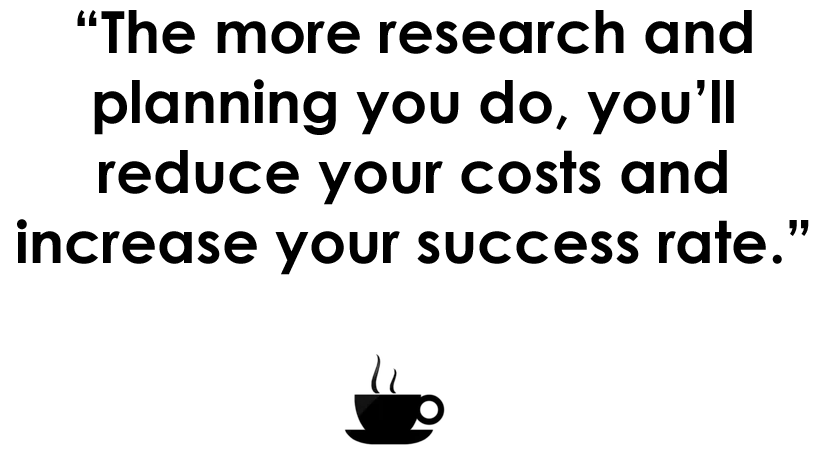
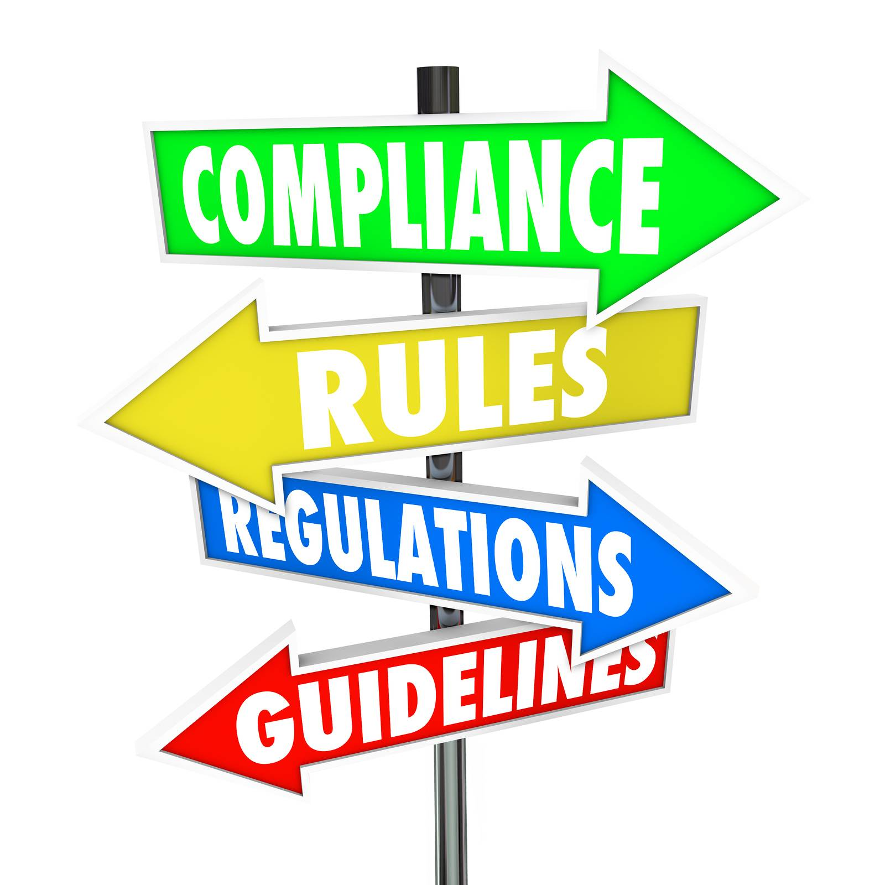
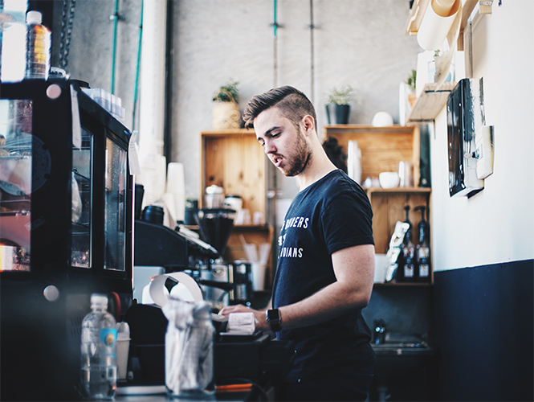

The first and the most important step towards setting up a coffee shop is to create a solid business plan.

This document gives information about what exactly your business is, how profitable will it be, defining your customer base, explore competitors, plans for growth and troubleshooting strategies necessary for achieving your goals.
Starting a coffee business is a significant expense. We need to determine the initial costs of our coffee shop before moving forward.
The main question here is how to estimate the costs of your coffee shop. Developing a budget for your coffee shop is the best way to determine the initial costs. This budget will play a key role in your coffee shop business plan.
When you decide to start a coffee shop, you may get a shock after calculating the costs involved. Don’t get intimidated. You should be honest with yourselves and find a way to manage the costs properly. A good business plan will help a lot in getting the initial money to start the coffee shop.
Read the article on how to start a coffee shop with little money.
In market research, it is very important to do research on the following two things:
1. Customers
It is very important to research what options do the customers have, what do they like etc. In short, it is important that you know your customers well.
A coffee shop needs good relationship between the customers and the employees to become a successful and profitable venture. Researching customers will ensure that the coffee shop provides all the facilities to the customers as per their requirements. The more research and planning you do, the more you'll reduce your costs and increase your success rate.
2. Competitors
Research your competitors within a five-mile radius.
Answer questions like:
1. What are your competitors doing right?
2. What are they doing wrong?
3. What facilities do customers in your area want?
4. What are the emerging trends?
5. Which age-group do your customers generally belong to?
Creating a solid floor plan is very important for setting up a coffee shop. You need to make sure that the seating area is comfortable for the customers, there is enough space to accommodate a large crowd on special occasions, placing of coffee equipment, coffee preparation area etc.

You need to walk through every scenario that you can think of. Visualize everything that you can about the coffee shop floor and write that down.
You have three important factors when it comes choosing a location when you decide to open a coffee shop.
a. Right LocationIt is important to pick the right location for your coffee shop. While picking the right location, ensure that the location you pick is clean, safe, away from a lot of competitors and one that offers good parking services to your customers.
b. Right SpaceMake sure that the seating area is spacious and comfortable for customers. It should be able to handle high in-flow of customers during festive season and on weekends.
c. Right PriceMake sure that the price of the location fits in your budget that you made while chalking out your business plan.
Choose the coffee equipment carefully.
Espresso machines will be the costliest equipment. As it will be a big one-time investment, choose it properly. Research the features of the equipment and compare their costs with different vendors.

The coffee equipment interview will help you make better decisions and will give you useful knowledge that you need to have before spending money on the coffee shop equipment. It is worth it to know what you're getting into when it comes to your coffee equipment.
Knowing your local business requirements and regulations is important before you open your coffee shop. Additionally, the laws impact your payroll costs, your taxes, and your health code requirements. Don’t be afraid to make calls to various departments to know more about the rules and regulations of the state where you are planning to open your coffee shop.
Your coffee shop menu determines your equipment requirements, your specific space needs, and even your labor needs. To decide on a menu, talk to potential customers and research on the choice of customers about coffee drinks and snacks that they would like to have.
Write everything down. Also, ask yourself the following questions:
1. What will be the USP of your coffee shop?Your products will be the most important element that you will use to differentiate yourself among your competitors.
Start a coffee shop business with the goal to make a profit as quickly as possible. A bit of research on your pricing will help here. This is where you either make a profit or face loss.
When you start your coffee shop business, you will most likely sign a lease. Certainly, before you even start looking for a space or location for your cafe or coffee shop, there are a couple of things to consider. While you can search for a location independently, many take the help of a broker to do so. However, regardless of your decision,do consider the following points:
1. Don't trust your broker to handle everything
2. Your business lease will impact your initial costs
It is very important to choose the right employees for your coffee shop as they are the ones who will interact directly with the customers. While hiring, preference should be given to applicants with pleasing personality than ones with experience.
Having a training program for your hires is important. Hiring a coffee education consultant can be advantageous.
Training allows your staff to be the best that they can be, allow them to improve their skills, and deliver a consistently good cup of coffee.
Your employees are important to your business. Investing in your employees will not only improve morale, deliver more quality coffee, but also reduce turnover.
Take time to plan out your grand opening. Starting a coffee shop with a well-planned marketing campaign will help you streamline your efforts, save time and saving you lot of money in the long run. If you welcome in your customers, treat them well and give them a great coffee and snacks at affordable prices, they will ensure that your coffee shop becomes a profitable venture.